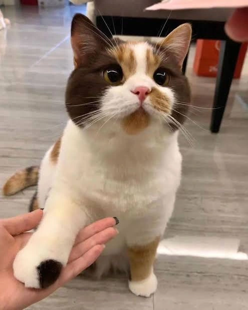

Hana's Story
From a difficult start to a brighter future.
Hana is a rescued cat whose story reflects the simplest part of the Dogecoin spirit: looking after those who need a helping hand.
With care and support from the Dogecoin Foundation, her story reminds us that doing good doesn't have to be complicated. Sometimes it starts with giving one animal a safe place and a little love.
Discover Hana's journey
Hana's Journey
01 Rescued
Hana received a second chance and the care she deserved.
02 Cared For
Kind people helped give her the safety and support she needed.
03 Much Loved
Now her story inspires people to keep doing good for animals.